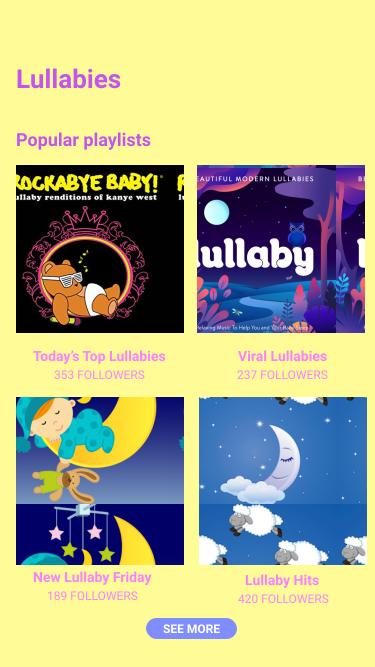
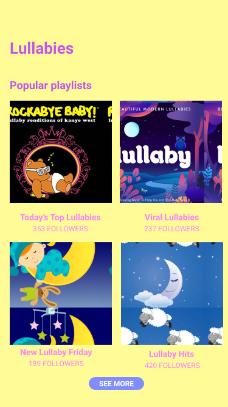
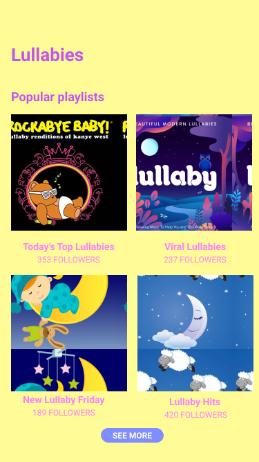

 You just finished making dinner after a long day at work and now it's time to put the baby to sleep. What
better way than with a playlist of all of your baby's favorite lullabies?
Or maybe it's your child's birthday party and you don't know what type of music to play. No worries - check out
the most liked albums on Baby Bops to see which songs kids like these days.
During one of our studios for CSCI 1300: User Interfaces and User Experiences, my partner and I created a
prototype of a spotify for babies application. I thought that turning this prototype into an application would
be a fun way to learn React.
My application, Baby Bops, is a music streaming app specifically designed for babies and young children. Since babies wouldn't be directly interacting with the application, but rather parents, I tried to make the interface both parent and child-friendly. My application displays 12 different albums and for each one, you can see how many likes it has, how many songs are in the album, and a button which allows you to add the album to your playlist. Below is a screenshot of the app in desktop view and mobile view.
Users can also filter albums by genre (lullabies or movie soundtracks) or by mood (energetic, sleepy, or
sing-along). So if it's naptime,
users can conveniently filter the albums so that only lullabies are displayed. If your child had too much candy
and is jumping all over the place, you can choose to only see albums with energetic tunes.
The app also has a sorting functionality which allows the user to sort the albums by how many likes they have. So
if you're not sure what type of music kids like these days,
you can easily sort the albums by most to least likes and see which ones are the most popular. Lastly, once you
add albums to your playlist,
it displays how many songs are in your playlist and also allows you to remove albums if you wish to.
Here is the link to try it yourself ♥
Link to GitHub repo here